Last updated: 2020-11-03
Checks: 7 0
Knit directory: Cant_eMLR/
This reproducible R Markdown analysis was created with workflowr (version 1.6.2). The Checks tab describes the reproducibility checks that were applied when the results were created. The Past versions tab lists the development history.
Great! Since the R Markdown file has been committed to the Git repository, you know the exact version of the code that produced these results.
Great job! The global environment was empty. Objects defined in the global environment can affect the analysis in your R Markdown file in unknown ways. For reproduciblity it’s best to always run the code in an empty environment.
The command set.seed(20200707) was run prior to running the code in the R Markdown file. Setting a seed ensures that any results that rely on randomness, e.g. subsampling or permutations, are reproducible.
Great job! Recording the operating system, R version, and package versions is critical for reproducibility.
Nice! There were no cached chunks for this analysis, so you can be confident that you successfully produced the results during this run.
Great job! Using relative paths to the files within your workflowr project makes it easier to run your code on other machines.
Great! You are using Git for version control. Tracking code development and connecting the code version to the results is critical for reproducibility.
The results in this page were generated with repository version bfa7a21. See the Past versions tab to see a history of the changes made to the R Markdown and HTML files.
Note that you need to be careful to ensure that all relevant files for the analysis have been committed to Git prior to generating the results (you can use wflow_publish or wflow_git_commit). workflowr only checks the R Markdown file, but you know if there are other scripts or data files that it depends on. Below is the status of the Git repository when the results were generated:
Ignored files:
Ignored: .Rproj.user/
Ignored: data/GLODAPv1_1/
Ignored: data/GLODAPv2_2016b_MappedClimatologies/
Ignored: data/GLODAPv2_2020/
Ignored: data/Gruber_2019/
Ignored: data/WOCE/
Ignored: data/World_Ocean_Atlas_2013_Clement/
Ignored: data/World_Ocean_Atlas_2018/
Ignored: data/eMLR/
Ignored: data/mapping/
Ignored: data/pCO2_atmosphere/
Ignored: dump/
Untracked files:
Untracked: code/globe_3d.R
Unstaged changes:
Modified: analysis/_site.yml
Modified: code/Workflowr_project_managment.R
Note that any generated files, e.g. HTML, png, CSS, etc., are not included in this status report because it is ok for generated content to have uncommitted changes.
These are the previous versions of the repository in which changes were made to the R Markdown (analysis/analysis_this_study_vs_Gruber_2019.Rmd) and HTML (docs/analysis_this_study_vs_Gruber_2019.html) files. If you’ve configured a remote Git repository (see ?wflow_git_remote), click on the hyperlinks in the table below to view the files as they were in that past version.
| File | Version | Author | Date | Message |
|---|---|---|---|---|
| Rmd | bfa7a21 | jens-daniel-mueller | 2020-11-03 | added comparison to Gruber 2019, revised basin mask |
library(tidyverse)
library(patchwork)
library(scico)
library(scales)
library(metR)
library(marelac)
library(kableExtra)
library(threejs)Cant estimates from this study:
Cant_average <-
read_csv(here::here("data/mapping/_summarized_files",
"Cant_average.csv"))
Cant_average_zonal <-
read_csv(here::here("data/mapping/_summarized_files",
"Cant_average_zonal.csv"))
Cant_inv <-
read_csv(here::here("data/mapping/_summarized_files",
"Cant_inv.csv"))Cant_07 <- read_csv(here::here("data/Gruber_2019/_summarized_files",
"Cant_07.csv"))
Cant_07_inv <-
read_csv(here::here("data/Gruber_2019/_summarized_files",
"Cant_07_inv.csv"))For ease of comparison with Gruber et al (2019) we adapt their color scale, including the ranges and breaks applied in various types of visualizations.
rgb2hex <- function(r, g, b)
rgb(r, g, b, maxColorValue = 100)
cols = c(rgb2hex(95, 95, 95),
rgb2hex(0, 0, 95),
rgb2hex(100, 0, 0),
rgb2hex(100, 100, 0))
Gruber_rainbow <- colorRampPalette(cols)
rm(rgb2hex, cols)Global Cant inventories were estimated in Pg-C. Please note that here we only added positive Cant values in the upper 3000m and do not apply additional corrections for areas not covered.
Cant_inv <- left_join(Cant_inv, basinmask_AIP)
Cant_inv_budget <- Cant_inv %>%
mutate(surface_area = earth_surf(lat, lon),
cant_inv_grid = cant_inv*surface_area) %>%
group_by(eras, basin_AIP) %>%
summarise(cant_total = sum(cant_inv_grid)*12*1e-15,
cant_total = round(cant_total,1)) %>%
ungroup() %>%
arrange(desc(eras)) %>%
pivot_wider(values_from = cant_total, names_from = basin_AIP) %>%
mutate(total = Atlantic + Indian + Pacific)
Cant_inv_budget %>%
kableExtra::kable() %>%
add_header_above() %>%
kable_styling(full_width = FALSE)| eras | Atlantic | Indian | Pacific | total |
|---|---|---|---|---|
| JGOFS_GO | 9.9 | 10.1 | 17.5 | 37.5 |
| GO_new | 6.9 | 3.9 | 13.6 | 24.4 |
rm(Cant_inv_budget)In a first series of plots we explore the distribution of Cant, taking only positive estimates into account (positive here refers to the mean Cant estimate across 10 eMLR model predictions available for each grid cell). Negative values were set to zero before calculating mean sections and inventories.
Cant_average_zonal <- Cant_average_zonal %>%
mutate(eras = factor(eras, c("JGOFS_GO", "GO_new")))
breaks <- c(seq(0,18,1),Inf)
breaks_n <- length(breaks) - 1
Cant_average_zonal <- Cant_average_zonal %>%
mutate(Cant_pos_mean_int = cut(Cant_pos_mean,
breaks,
right = FALSE))
zonal_section <- function(df, i_basin_AIP, i_eras, var) {
name_var <- var
var <- sym(var)
lat_max <- max(df$lat)
lat_min <- min(df$lat)
df_sub <- df %>%
filter(eras == i_eras,
basin_AIP == i_basin_AIP)
surface <- df_sub %>%
ggplot(aes(lat, depth, z = !!var)) +
geom_contour_filled(breaks = breaks) +
scale_fill_manual(values = Gruber_rainbow(breaks_n),
name = "Cant") +
coord_cartesian(expand = 0,
ylim = c(500, 0),
xlim = c(lat_min, lat_max)) +
scale_y_reverse() +
scale_x_continuous(breaks = seq(-100,100,20)) +
theme(
axis.title.x = element_blank(),
axis.text.x = element_blank(),
axis.ticks.x = element_blank()
) +
labs(y = "Depth (m)",
title = paste("Basin:", i_basin_AIP, "| eras:", i_eras))
deep <- df_sub %>%
ggplot(aes(lat, depth, z = !!var)) +
geom_contour_filled(breaks = breaks) +
scale_fill_manual(values = Gruber_rainbow(breaks_n),
name = "Cant") +
scale_y_reverse() +
scale_x_continuous(breaks = seq(-100,100,20)) +
coord_cartesian(expand = 0,
ylim = c(3000, 500),
xlim = c(lat_min, lat_max)) +
labs(x = "latitude (°N)", y = "Depth (m)")
surface / deep +
plot_layout(guides = "collect")
}
for (i_basin_AIP in unique(Cant_average_zonal$basin_AIP)) {
for (i_eras in rev(unique(Cant_average_zonal$eras))) {
print(zonal_section(Cant_average_zonal,
i_basin_AIP = i_basin_AIP,
i_eras = i_eras,
"Cant_pos_mean"))
}
}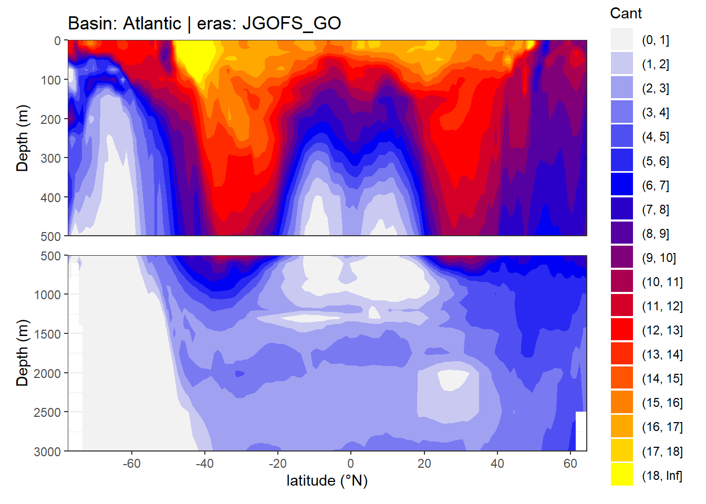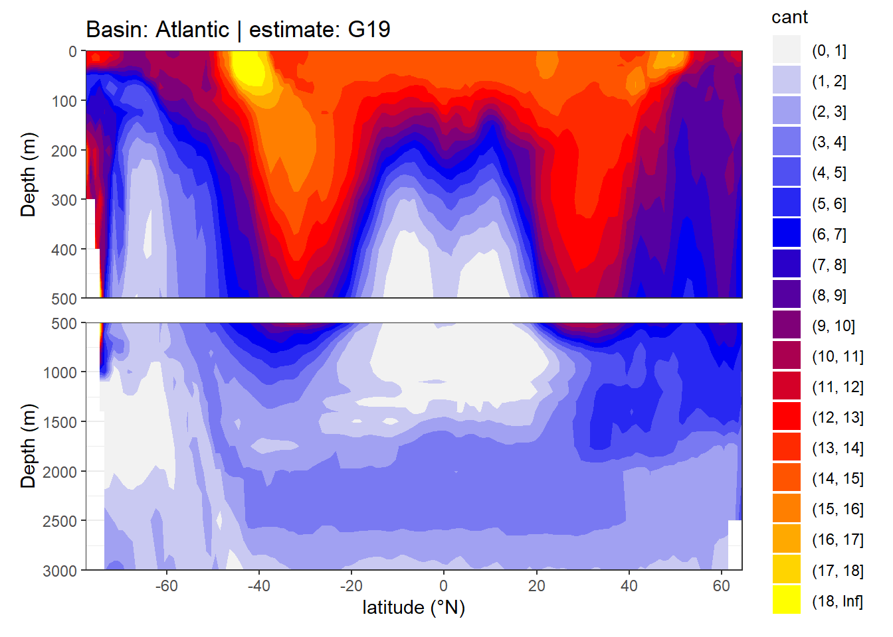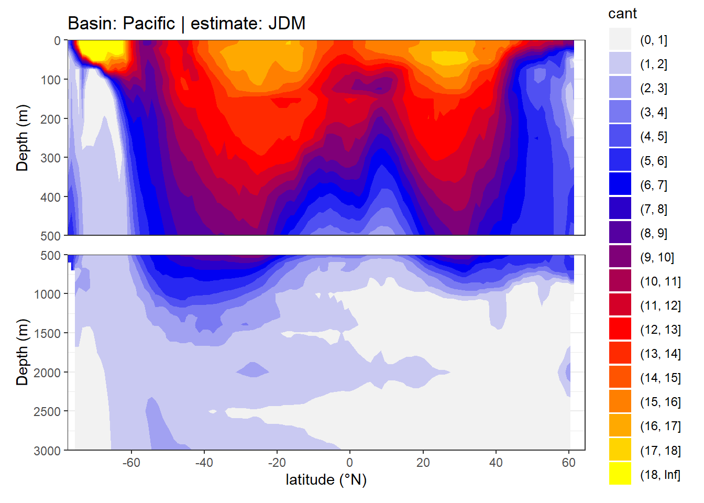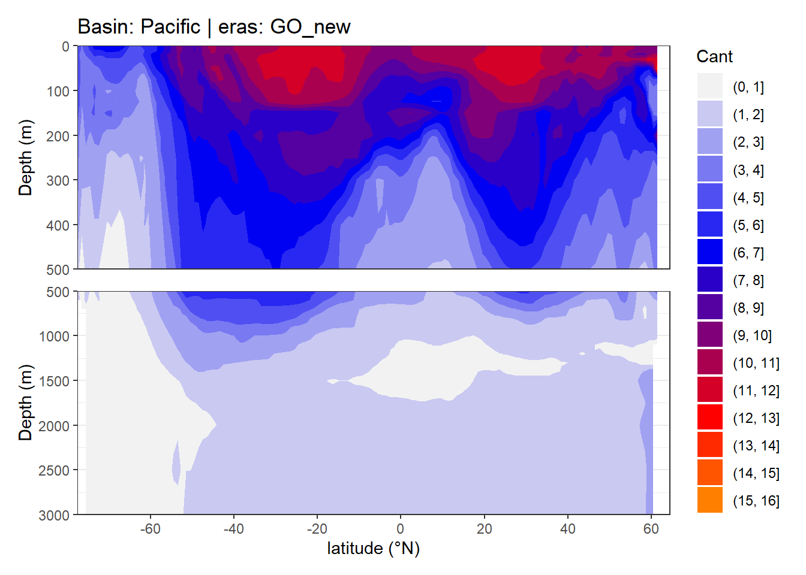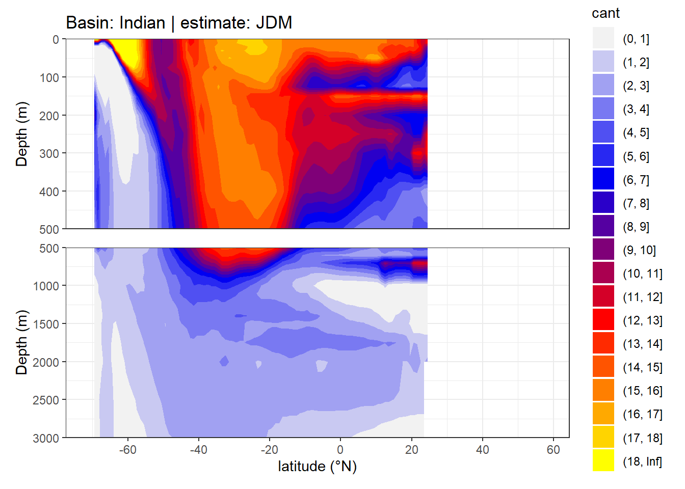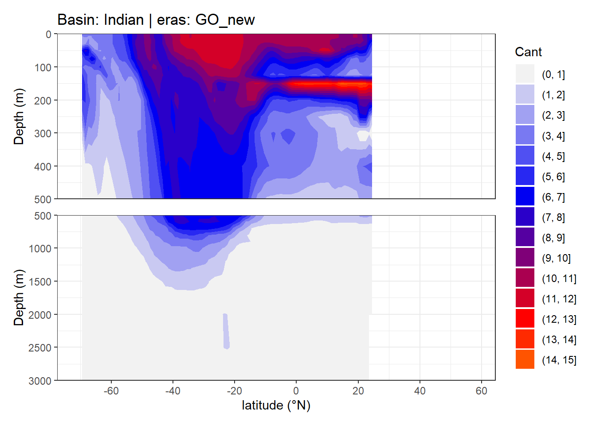
rm(breaks, breaks_n)Mean of positive Cant within each horizontal grid cell (lon x lat) per isoneutral slab.
Please note that:
Cant_gamma_maps <- Cant_average %>%
group_by(lat, lon, gamma_slab, eras) %>%
summarise(Cant_pos = mean(Cant_pos, na.rm = TRUE)) %>%
ungroup()
breaks <- c(seq(0,16,2),Inf)
breaks_n <- length(breaks) - 1
Cant_gamma_maps <- Cant_gamma_maps %>%
mutate(Cant_pos_int = cut(Cant_pos,
breaks,
right = FALSE)) %>%
mutate(eras = factor(eras, c("JGOFS_GO", "GO_new")))
ggplot() +
geom_raster(data = landmask,
aes(lon, lat),
fill = "grey30") +
geom_raster(data = Cant_gamma_maps,
aes(lon, lat, fill = Cant_pos_int)) +
scale_fill_manual(values = Gruber_rainbow(breaks_n)) +
facet_grid(gamma_slab ~ eras) +
coord_quickmap(expand = 0) +
theme(axis.title = element_blank(),
axis.ticks = element_blank(),
axis.text = element_blank(),
legend.position = "top")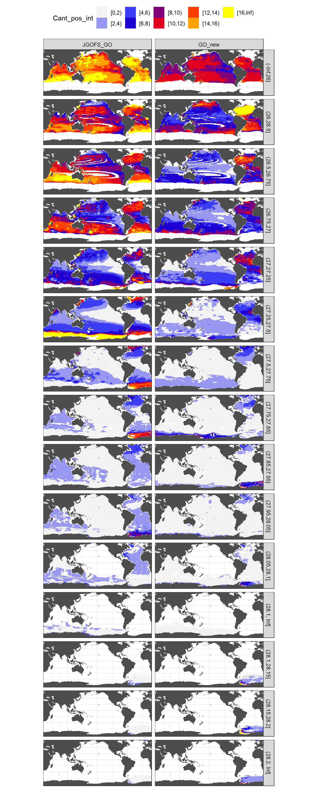
rm(Cant_gamma_maps, breaks, breaks_n)Column inventory of positive Cant between the surface and 3000m water depth per horizontal grid cell (lat x lon).
breaks <- c(seq(0,16,2),Inf)
breaks_n <- length(breaks) - 1
Cant_inv <- Cant_inv %>%
mutate(cant_inv_pos_int = cut(cant_inv_pos,
breaks,
right = FALSE)) %>%
mutate(eras = factor(eras, c("JGOFS_GO", "GO_new")))
Cant_inv %>%
ggplot() +
geom_raster(data = landmask,
aes(lon, lat), fill = "grey30") +
geom_raster(aes(lon, lat, fill = cant_inv_pos_int)) +
coord_quickmap(expand = 0) +
scale_fill_manual(values = Gruber_rainbow(breaks_n)) +
# scale_fill_scico_d(palette = "batlow", direction = -1) +
facet_wrap( ~ eras, ncol = 1) +
theme(axis.title = element_blank())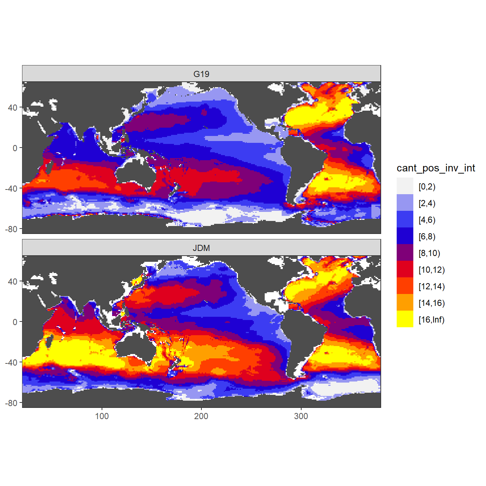
section_global(Cant_average %>% filter(eras == "JGOFS_GO"),
"Cant_pos")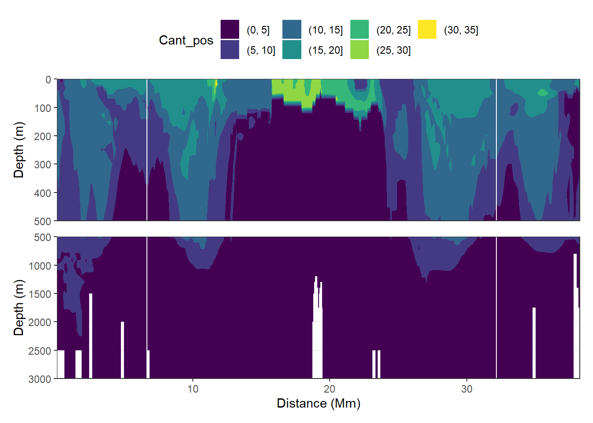
section_global(Cant_average %>% filter(eras == "GO_new"),
"Cant_pos")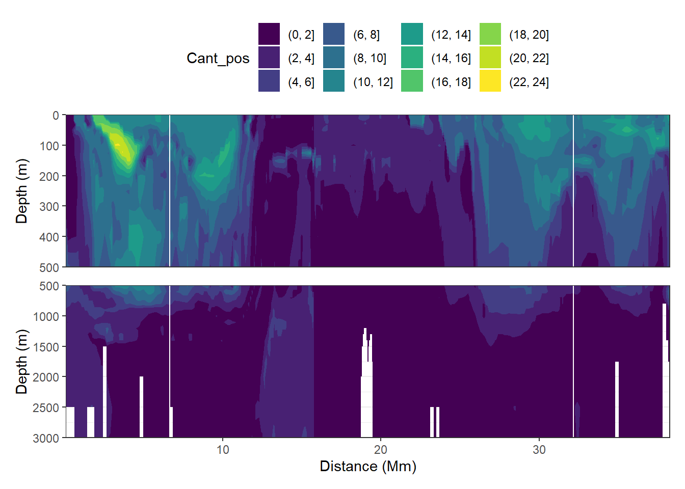
In a second series of plots we explore the distribution of Cant, taking positive and negative estimates into account.
section_zonal_average_divergent(Cant_average_zonal,
"Cant_mean",
"gamma_mean")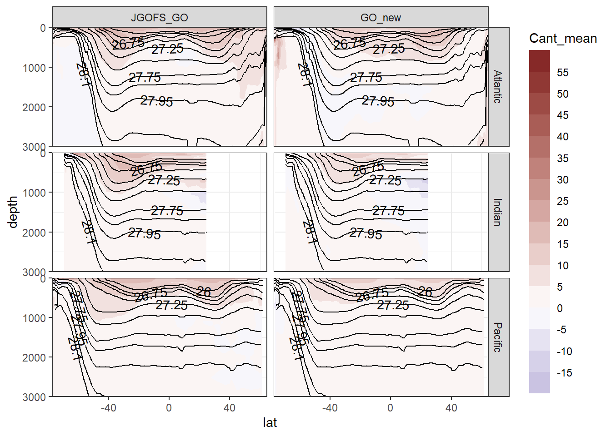
Mean of Cant within each horizontal grid cell (lon x lat) per isoneutral slab.
Please note that:
Cant_gamma_maps <- Cant_average %>%
group_by(lat, lon, gamma_slab, eras) %>%
summarise(Cant = mean(Cant, na.rm = TRUE)) %>%
ungroup()
breaks <- c(-Inf, seq(-16, 16, 4), Inf)
breaks_n <- length(breaks) - 1
Cant_gamma_maps <- Cant_gamma_maps %>%
mutate(Cant_int = cut(Cant,
breaks,
right = FALSE)) %>%
mutate(eras = factor(eras, c("JGOFS_GO", "GO_new")))
ggplot() +
geom_raster(data = landmask,
aes(lon, lat),
fill = "grey30") +
geom_raster(data = Cant_gamma_maps,
aes(lon, lat, fill = Cant_int)) +
scale_fill_brewer(palette = "RdBu",
direction = -1) +
facet_grid(gamma_slab ~ eras) +
coord_quickmap(expand = 0) +
theme(
axis.title = element_blank(),
axis.ticks = element_blank(),
axis.text = element_blank(),
legend.position = "top"
)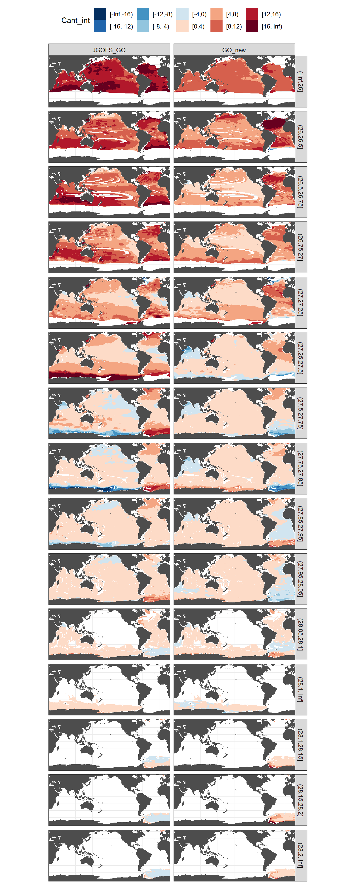
rm(Cant_gamma_maps, breaks, breaks_n)Column inventory of positive Cant between the surface and 3000m water depth per horizontal grid cell (lat x lon).
breaks <- c(-Inf, seq(-16,16,4),Inf)
breaks_n <- length(breaks) - 1
Cant_inv <- Cant_inv %>%
mutate(cant_inv_int = cut(cant_inv,
breaks,
right = FALSE))
Cant_inv %>%
ggplot() +
geom_raster(data = landmask,
aes(lon, lat), fill = "grey80") +
geom_raster(aes(lon, lat, fill = cant_inv_int)) +
coord_quickmap(expand = 0) +
scale_fill_brewer(palette = "RdBu",
direction = -1) +
facet_wrap(~eras, ncol = 1) +
theme(
axis.title = element_blank()
)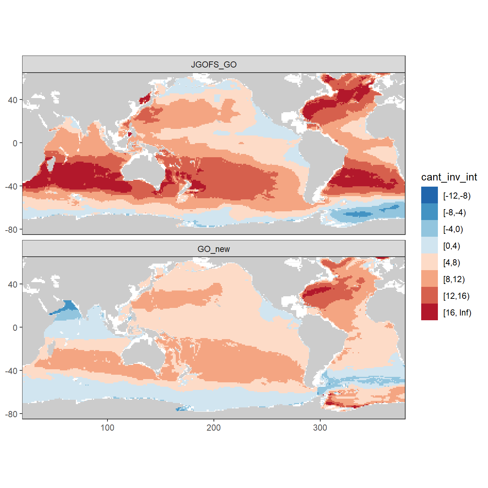
rm(breaks, breaks_n)Standard deviation across Cant from all MLR models was calculate for each grid cell (XYZ). The zonal mean of this standard deviation should reflect the uncertainty associated to the predictor selection within each slab and era.
section_zonal_average_continous(Cant_average_zonal,
"Cant_sd_mean",
"gamma_mean")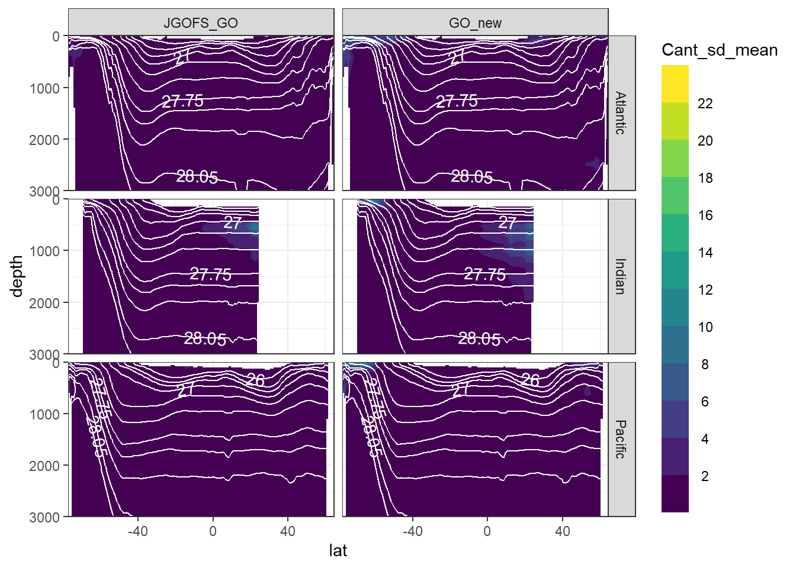
Standard deviation of mean Cant values was calculate across all longitudes. This standard deviation should reflect the zonal variability of Cant within the basin and era.
section_zonal_average_continous(Cant_average_zonal,
"Cant_sd",
"gamma_mean")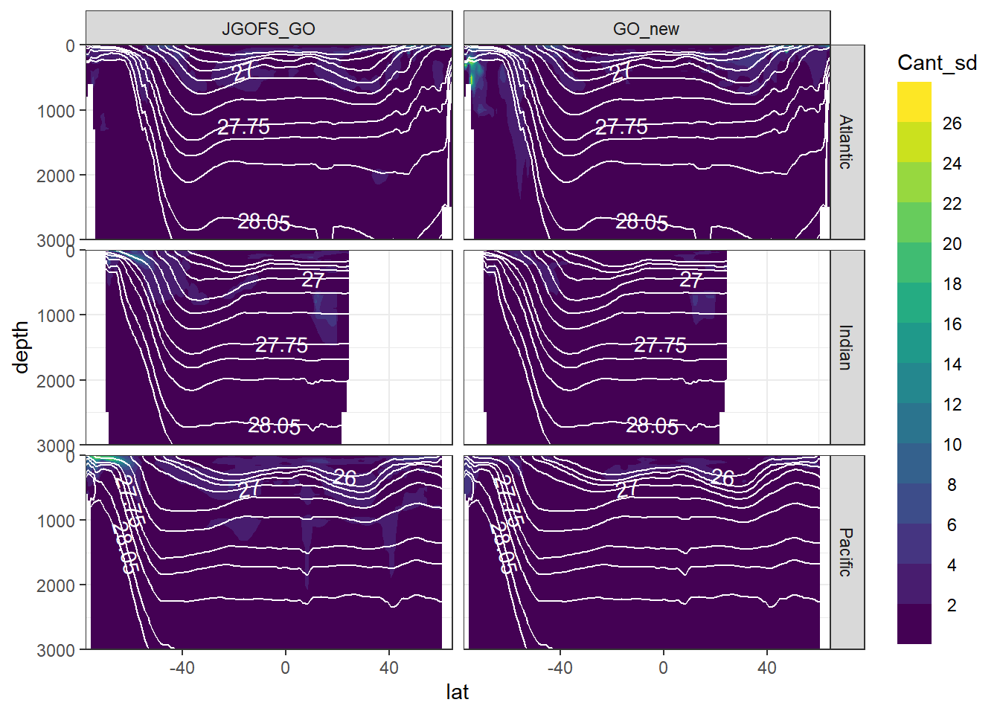
Cant_average <- Cant_average %>%
mutate(eras = factor(eras, c("JGOFS_GO", "GO_new")))
Cant_average %>%
ggplot(aes(Cant, Cant_sd)) +
geom_vline(xintercept = 0) +
geom_hline(yintercept = 10) +
geom_bin2d() +
scale_fill_viridis_c(option = "magma",
direction = -1,
trans = "log10",
name = "log10(n)") +
facet_grid(basin_AIP ~ eras)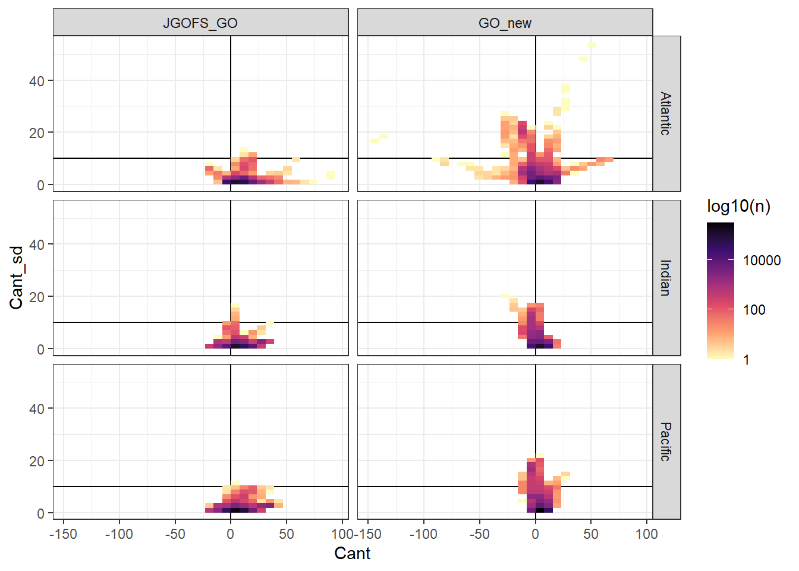
Cant_average %>%
ggplot(aes(Cant, Cant_sd)) +
geom_vline(xintercept = 0) +
geom_hline(yintercept = 10) +
geom_bin2d() +
scale_fill_viridis_c(option = "magma",
direction = -1,
trans = "log10",
name = "log10(n)") +
facet_grid(gamma_slab ~ basin_AIP)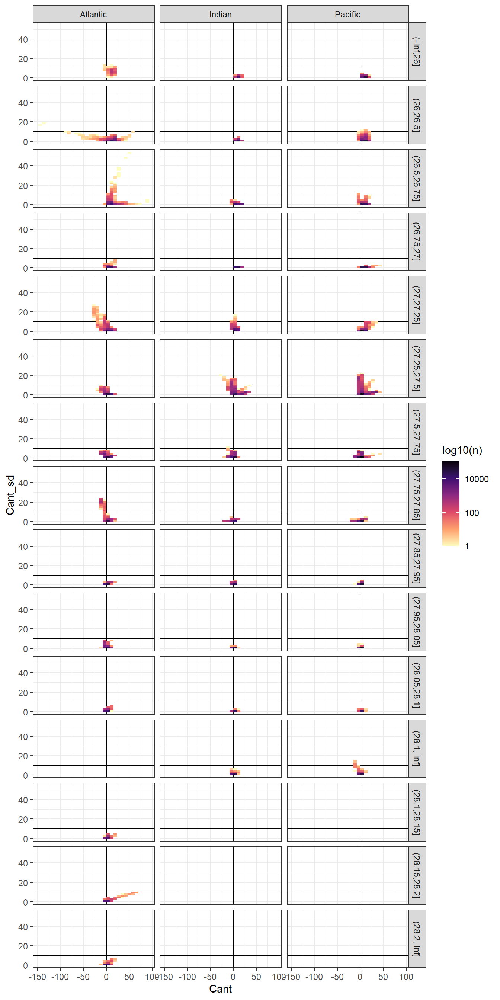
Cant_average_zonal %>%
ggplot(aes(Cant_mean, Cant_sd)) +
geom_vline(xintercept = 0) +
geom_hline(yintercept = 10) +
geom_bin2d() +
scale_fill_viridis_c(option = "magma",
direction = -1,
trans = "log10",
name = "log10(n)") +
facet_grid(basin_AIP ~ eras)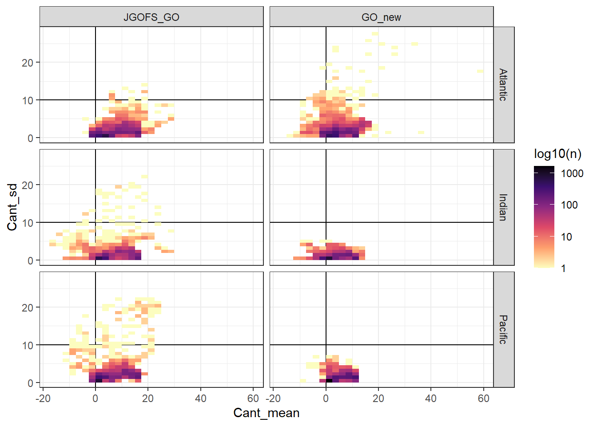
Cant_average_zonal %>%
ggplot(aes(Cant_mean, Cant_sd)) +
geom_vline(xintercept = 0) +
geom_hline(yintercept = 10) +
geom_bin2d() +
scale_fill_viridis_c(option = "magma",
direction = -1,
trans = "log10",
name = "log10(n)") +
facet_grid(gamma_slab ~ basin_AIP)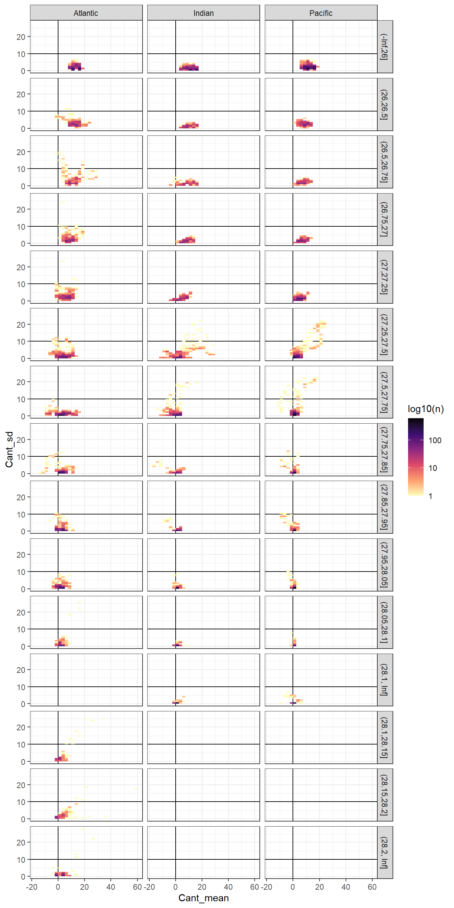
map_climatology_discrete(Cant_average, "gamma_slab")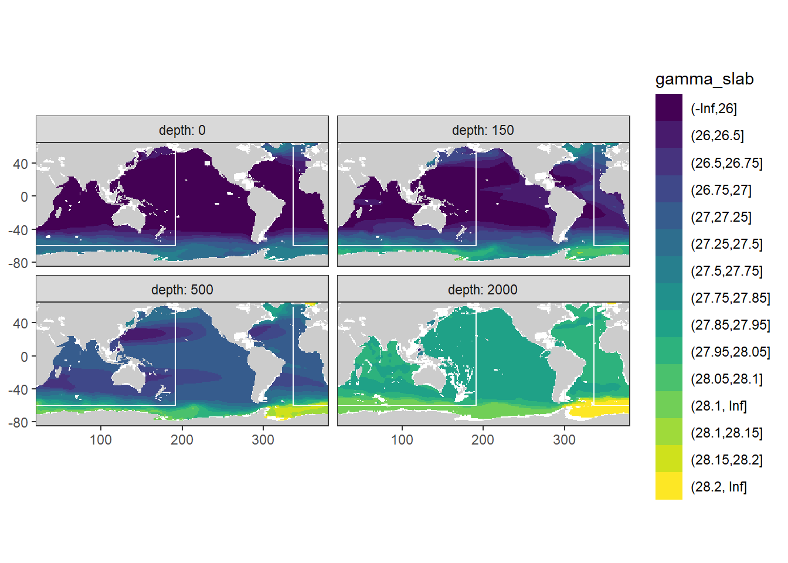
The mean zonal distribution of neutral densities was calculated. CAVEAT: Due to practical reasons, binning here does not include the two highest isoneutral density slabs in the Atlantic, yet.
Cant_average_zonal %>%
filter(eras == "JGOFS_GO") %>%
ggplot(aes(lat, depth, z = gamma_mean)) +
geom_contour_filled(breaks = slab_breaks) +
geom_contour(breaks = slab_breaks,
col = "white") +
geom_text_contour(breaks = slab_breaks,
col = "white",
skip = 1) +
scale_fill_viridis_d(name = "Gamma",
direction = -1) +
scale_y_reverse() +
scale_x_continuous(breaks = seq(-100, 100, 20)) +
coord_cartesian(expand = 0) +
guides(fill = guide_colorsteps(barheight = unit(10, "cm"))) +
facet_grid(basin_AIP~.)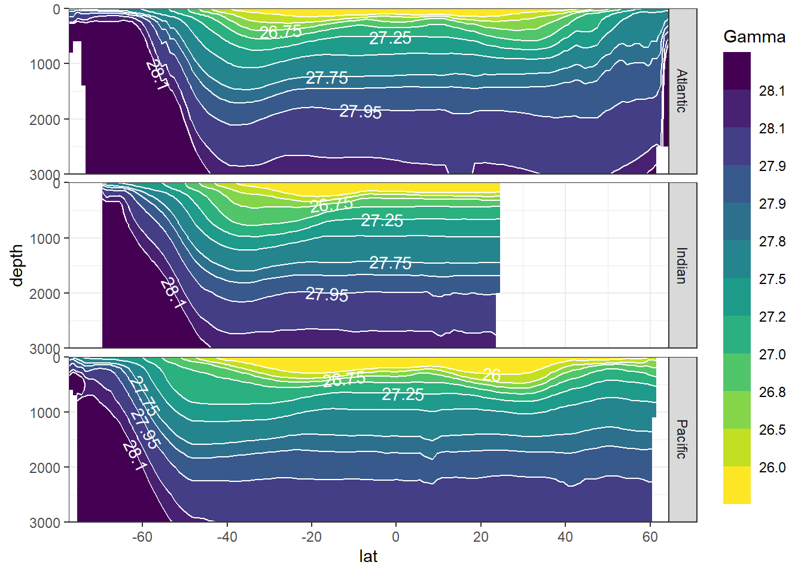
Higher SD of gamma in shallow, subtropical waters results from a more pronounced longitudinal variability.
Cant_average_zonal %>%
filter(eras == "JGOFS_GO") %>%
ggplot(aes(lat, depth, z = gamma_sd)) +
geom_contour_filled() +
scale_fill_viridis_d(name = "Gamma SD",
direction = -1) +
scale_y_reverse() +
scale_x_continuous(breaks = seq(-100, 100, 20)) +
coord_cartesian(expand = 0) +
guides(fill = guide_colorsteps(barheight = unit(10, "cm"))) +
facet_grid(basin_AIP~.)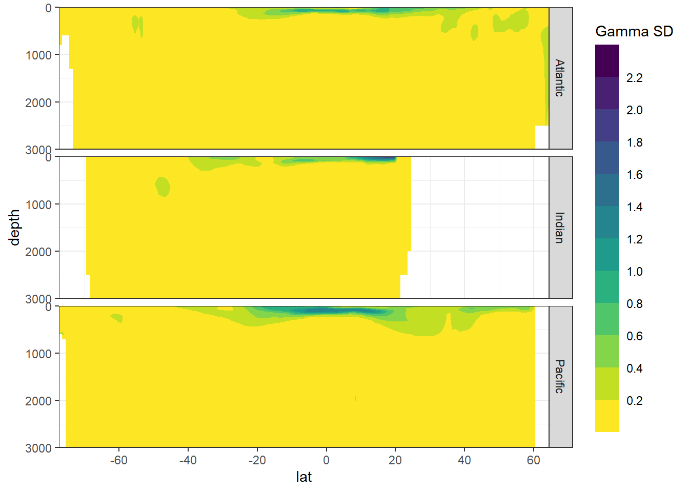
Deviations between this study and the results by Gruber et al (2019), short G19, for the same period, might be attributable to following known differences in the implementation of the eMLR(C*) method:
sessionInfo()R version 4.0.2 (2020-06-22)
Platform: x86_64-w64-mingw32/x64 (64-bit)
Running under: Windows 10 x64 (build 18363)
Matrix products: default
locale:
[1] LC_COLLATE=English_Germany.1252 LC_CTYPE=English_Germany.1252
[3] LC_MONETARY=English_Germany.1252 LC_NUMERIC=C
[5] LC_TIME=English_Germany.1252
attached base packages:
[1] stats graphics grDevices utils datasets methods base
other attached packages:
[1] threejs_0.3.3 igraph_1.2.5 kableExtra_1.1.0 marelac_2.1.10
[5] shape_1.4.4 metR_0.7.0 scales_1.1.1 scico_1.2.0
[9] patchwork_1.0.1 forcats_0.5.0 stringr_1.4.0 dplyr_1.0.0
[13] purrr_0.3.4 readr_1.3.1 tidyr_1.1.0 tibble_3.0.3
[17] ggplot2_3.3.2 tidyverse_1.3.0 workflowr_1.6.2
loaded via a namespace (and not attached):
[1] fs_1.4.2 lubridate_1.7.9 gsw_1.0-5 RColorBrewer_1.1-2
[5] webshot_0.5.2 httr_1.4.2 rprojroot_1.3-2 tools_4.0.2
[9] backports_1.1.8 R6_2.4.1 DBI_1.1.0 colorspace_1.4-1
[13] sp_1.4-2 withr_2.2.0 tidyselect_1.1.0 compiler_4.0.2
[17] git2r_0.27.1 cli_2.0.2 rvest_0.3.6 xml2_1.3.2
[21] isoband_0.2.2 labeling_0.3 checkmate_2.0.0 digest_0.6.25
[25] rmarkdown_2.3 oce_1.2-0 base64enc_0.1-3 pkgconfig_2.0.3
[29] htmltools_0.5.0 dbplyr_1.4.4 highr_0.8 htmlwidgets_1.5.1
[33] rlang_0.4.7 readxl_1.3.1 rstudioapi_0.11 farver_2.0.3
[37] generics_0.0.2 jsonlite_1.7.0 crosstalk_1.1.0.1 magrittr_1.5
[41] Rcpp_1.0.5 munsell_0.5.0 fansi_0.4.1 lifecycle_0.2.0
[45] stringi_1.4.6 whisker_0.4 yaml_2.2.1 plyr_1.8.6
[49] grid_4.0.2 blob_1.2.1 promises_1.1.1 crayon_1.3.4
[53] lattice_0.20-41 haven_2.3.1 hms_0.5.3 seacarb_3.2.13
[57] knitr_1.30 pillar_1.4.6 reprex_0.3.0 glue_1.4.1
[61] evaluate_0.14 data.table_1.13.0 modelr_0.1.8 vctrs_0.3.2
[65] httpuv_1.5.4 testthat_2.3.2 cellranger_1.1.0 gtable_0.3.0
[69] assertthat_0.2.1 xfun_0.16 broom_0.7.0 later_1.1.0.1
[73] viridisLite_0.3.0 memoise_1.1.0 ellipsis_0.3.1 here_0.1